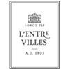
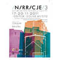

|
Przedstawiam Państwu ofertę oprawy artystycznej, o charakterze dopasowanym do Państwa wymagań. Posiadam bogaty repertuar, wykonuję standardy jazzowe oraz covery. Współpracuję z najlepszymi muzykami i zespołami, których skład dobierany jest w zależności od oczekiwanej dynamiki występu: śpiewam kameralnie, spokojnie, w tle, a także energetycznie. Łączę elementy jazzu, soulu, poezji śpiewanej, funku, muzyki popularnej. Aleksandra Skrzypczyk |
Oferta
Oprawa muzyczna wydarzeniaSpokojna smooth-jazzowa gra pianina w tle i miękki, głęboki wokal. Doskonałe tło do imprez takich jak: spotkania firmowe, bankiety, kameralne koncerty w restauracjach, imprezy integracyjne, imprezy firmowe, bale, uroczyste gale, spotkania przy muzyce, imprezy plenerowe, supporty, dancingi, eksluzywne przyjęcia weselne i wiele innych. Do ustalenia sekcja rytmiczna. |
Występy, koncertyEnergetyczne występy coverowe, tematyczne, a także autorskie. „Pierwsze skrzypce”. Repertuar anglojęzyczny i polskojęzyczny. Liczba muzyków według potrzeb klienta - od 2 do 5 (wokal, instr. klawiszowe, sekcja rytmiczna, saksofon/skrzypce). |
Śpiew na ślubieOferuję oprawę muzyczną ślubu w kościele, lub w innym, wymarzonym miejscu. Śpiewam utwory religijne, klasyczne, popularne przy akompaniameńcie organisty, pianisty lub wysokiej jakości podkładów muzycznych. Szczegóły oferty ślubnej |
Realizacje
Mon Balzac - Gdańsk |
Sheraton Sopot |
L'Entre Villes - Sopot |
Meble Wójcik |
Mera Hotel & Spa Sopot |
Międzynarodowe Targi Poznańskie |
Ego Sopot |
Skipper Hotel - Rewa |
Hilton Gdańsk |
|
New Boogie Down School |
Barocco - Sopot |
Unique Club & Longue - Sopot |
Scena Muzyczna Gdańsk |
Galeria 63 - Sopot |
Klub Muzyczny Scena - Sopot |
Festiwal Narracje |
Hotel Srebrny Dzwon - Kadyny |
Smak Morza - Sopot |
|
Starovka - Elbląg |
Piwnice Dworu Kużniczki - Gdańsk |
Spichlerz Mariacki - Braniewo |
Ygrek - Gdańsk |
Sim |
Tawerna Dominikańska - Gdańsk |
Hotel Opera - Sopot |
Del Mar - Gdynia |
Amsterdam Pub - Gdańsk |
|
Mimoza - Elbląg |
Orchidea - Chwaszczyno |
Hotel Elblęg |
Siemens |
Szafarnia 10 - Gdańsk |
Delmonico Cut Steakhouse - Gdańsk |
Villa Antonina - Sopot |
Hotel Almond - Gdańsk |
Hotel Młyn Elbląg |
|
Braniewskie Centrum Kultury |
Mechaniczna Pomarańcza Gdańsk |
Muzyka
Galeria

{kind=link}
{kind=link}
{kind=link}
{kind=link}
{kind=link}
{kind=link}
{kind=link}
{kind=link}
{kind=link}
{kind=link}
{kind=link}
{kind=link}
{kind=link}
{kind=link}
{kind=link}
{kind=link}
{kind=link}
{kind=link}
{kind=link}
{kind=link}
{kind=link}
{kind=link}
{kind=link}
{kind=link}
{kind=link}
{kind=link}
{kind=link}
{kind=link}
{kind=link}
{kind=link}
{kind=link}
{kind=link}
Kontakt
Więcej informacji, dotyczących oferty oraz pełen repertuar, uzyskają Państwo, pisząc na adres mailowy: apskrzypczyk@gmail.com